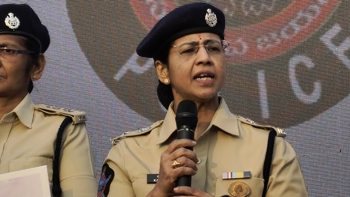

A public communication portal for citizen engagement, official updates, community outreach, and approved information related to Smt K.G.V. Saritha, IPS.

Profile details of Smt K.G.V. Saritha, IPS.

| Name | Smt K.G.V. Saritha, IPS |
|---|---|
| Rank | Deputy Commissioner of Police (DCP) |
| Current Posting | DCP (Administration), Vijayawada |
| Jurisdiction | NTR Police Commissionerate, Vijayawada, Andhra Pradesh |
| Office Location | NTR Police Commissionerate Headquarters, Vijayawada |
| Office Visiting Hours | 10:30 AM to 05:00 PM (IST) by prior appointment |
| Service Cadre | Indian Police Service (IPS) |
| Primary Responsibility | Directing personnel administration, operational logistics, force welfare, and public outreach coordination. |
Overseeing administrative protocols, managing resource allocation, and optimizing workflow efficiencies to support the police force.
Coordinating departmental outreach initiatives, cybersecurity campaigns, and safety programs in partnership with community organizations.
Facilitating structured communication channels between the police administration and citizens to ensure clarity and professional service.
Administrative programs and awareness campaigns coordinated for community safety and public engagement.
Coordinating community safety campaigns, student safety programs, and awareness sessions led by SHE Teams to enhance safety in public and educational spaces.
Submit InquiryOrganizing educational programs in schools and colleges addressing drug prevention, student wellness, and civil service path awareness.
Submit InquiryConducting public campaigns on digital hygiene, online security protocols, financial fraud prevention, and recovery mechanisms.
Submit InquiryPromoting public-police cooperation platforms (such as citizen councils) to coordinate safety feedback and address local community needs.
Submit InquiryFacilitating official administrative channels for scheduling representations, submitting feedback, and directing inquiries to relevant cells.
Submit InquiryCollaborating with academic, corporate, and civil institutions to coordinate training, wellness sessions, and administrative seminars.
Submit InquiryFactual listings of official addresses, press statements, and media interviews approved for public access.

An official address detailing public responsibility, administrative service pathways, and leadership ethics for young graduates.

Discussing digital security measures, financial fraud preventions, and legal remedies available to citizens under current statutes.

Official departmental summary briefing the coordination activities, school awareness session counts, and outreach program structures.

Information session focused on cybersecurity principles, safety checklists, and response systems for educational institutions.
Official manuals and presentation slides published for public guidance and cybersecurity training.
An administrative manual outlining standard guidelines for citizen coordination groups and community safety programs.
Download PDF (3.2 MB)Educational presentation slides detailing security standards and digital safety checklists for educational venues.
Read Presentation SlidesVerified photographs representing official ceremonies, community outreach, and awareness campaigns.


Approved contact methods for scheduling inquiries, university seminars, administrative representations, and outreach coordination.
For official invitations, administrative schedules, and outreach requests.
dcp.saritha.ips@gmail.comDedicated messaging channel for administrative feedback and scheduling outreach sessions.
Open Official ChatSubmit scheduling invitations, feedback, or administrative inquiries directly to the office.
Category Tag